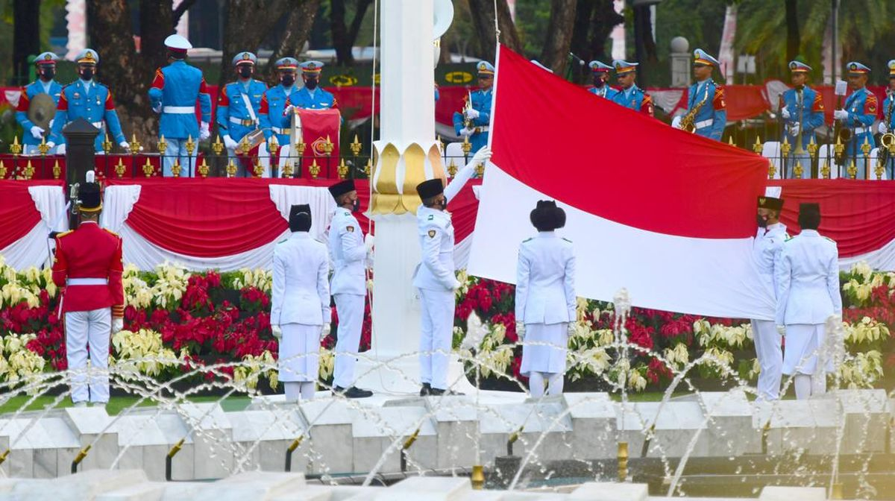

Pengumuman
15 Agustus 2026
Peringatan HUT RI ke-81 Tingkat Desa Buah Berak
Seluruh warga diundang untuk hadir dalam upacara bendera dan rangkaian kegiatan peringatan Hari Kemerdekaan Indonesia.
Baca Selengkapnya